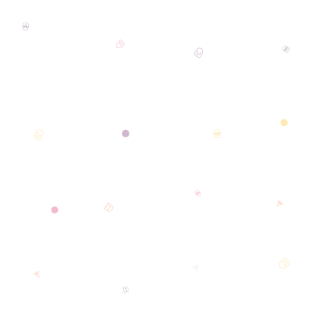

This shows the pattern SVG directly at its native size:
This shows how the pattern looks when tiled as a background:
// Sample code with background
function halloweenTheme() {
const colors = {
pumpkinOrange: '#FF7A18',
witchPurple: '#6A0D83',
toxicGreen: '#4EF17B',
bloodRed: '#FF2E4C'
};
return colors;
}
console.log('Happy Halloween! 🎃👻');
This simulates how it looks in the VSCode editor:
const message = "Spooky coding!"; console.log(message);